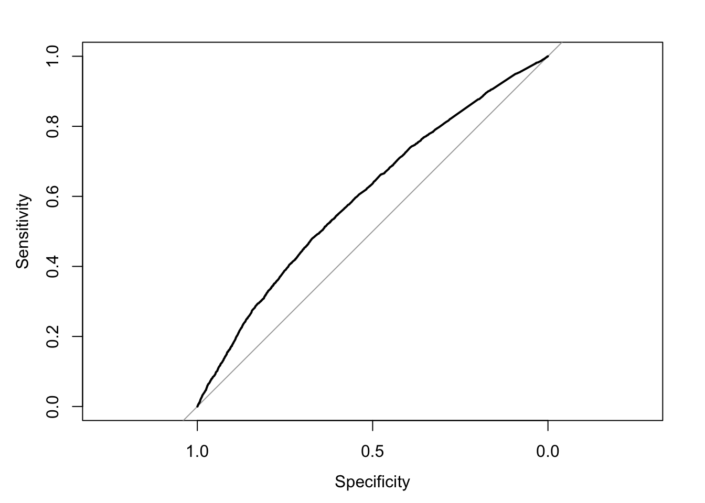
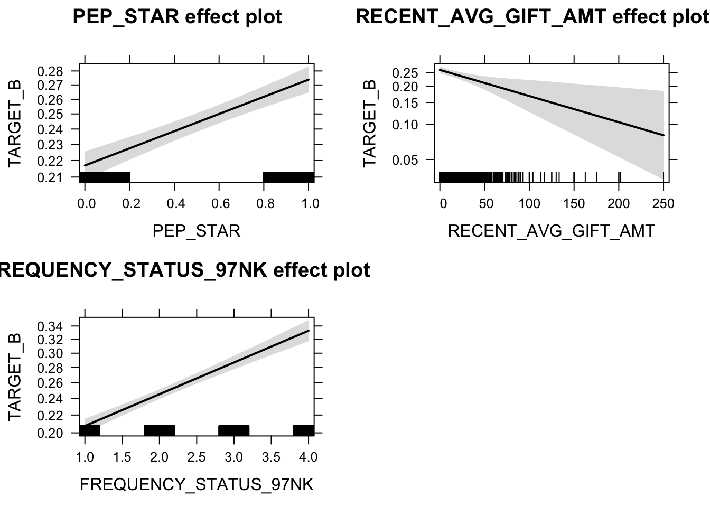

library(sas7bdat)
library(effects)
library(pROC)
library(ROCR)
library(sjPlot)dt <-read.sas7bdat("data/pva_raw_data.sas7bdat", debug=TRUE)fit.log <- glm(TARGET_B ~ PEP_STAR + RECENT_AVG_GIFT_AMT +
FREQUENCY_STATUS_97NK,
family=binomial(link='logit'),data=dt)summary(fit.log)##
## Call:
## glm(formula = TARGET_B ~ PEP_STAR + RECENT_AVG_GIFT_AMT + FREQUENCY_STATUS_97NK,
## family = binomial(link = "logit"), data = dt)
##
## Deviance Residuals:
## Min 1Q Median 3Q Max
## -0.98694 -0.78327 -0.66116 0.09466 2.27904
##
## Coefficients:
## Estimate Std. Error z value Pr(>|z|)
## (Intercept) -1.624110 0.058396 -27.812 < 2e-16 ***
## PEP_STAR 0.307826 0.036066 8.535 < 2e-16 ***
## RECENT_AVG_GIFT_AMT -0.005551 0.002043 -2.717 0.00658 **
## FREQUENCY_STATUS_97NK 0.214706 0.016799 12.781 < 2e-16 ***
## ---
## Signif. codes: 0 '***' 0.001 '**' 0.01 '*' 0.05 '.' 0.1 ' ' 1
##
## (Dispersion parameter for binomial family taken to be 1)
##
## Null deviance: 21787 on 19371 degrees of freedom
## Residual deviance: 21344 on 19368 degrees of freedom
## AIC: 21352
##
## Number of Fisher Scoring iterations: 4prob=predict(fit.log,type=c("response"))
dt$prob=prob
g <- roc(TARGET_B ~ prob, data = dt)
plot(g) 
exp(cbind(OR = coef(fit.log), confint(fit.log)))## Waiting for profiling to be done...## OR 2.5 % 97.5 %
## (Intercept) 0.1970870 0.1758820 0.2211238
## PEP_STAR 1.3604636 1.2676559 1.4601673
## RECENT_AVG_GIFT_AMT 0.9944644 0.9904069 0.9983680
## FREQUENCY_STATUS_97NK 1.2394971 1.1993314 1.2809695plot(allEffects(fit.log))
sjp.glm(fit.log,
xisLabels.y=lab,
type="bars",
gridBreaksAt=0.4)## Warning: Invalid `type` argument. Defaulting to `dots`.## Waiting for profiling to be done...## Interpretation